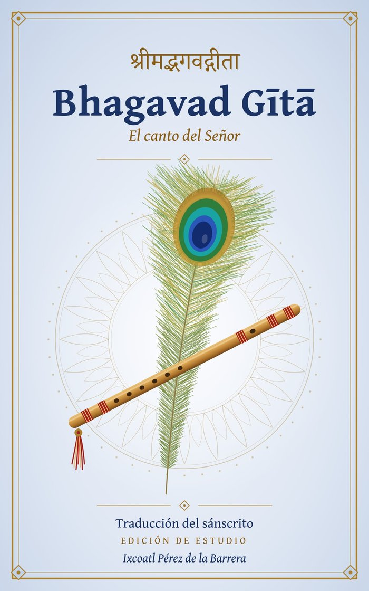

Bhagavad Gītā — El canto del Señor
Cómo leer esta edición
El texto está pensado para leerse de corrido y, sólo cuando lo quieras, profundizar. En cada capítulo puedes elegir, en la barra superior, el nivel de lectura:
- Lectura: sólo la traducción, sin marcas.
- Estudio: números de verso, secciones y términos subrayados.
- Original: además, el sánscrito bajo cada verso.
Para explorar un verso (sánscrito, palabra por palabra, notas e interpretaciones), haz clic derecho sobre él o toca su número. Pasa el cursor sobre un término subrayado para ver una definición; haz clic para abrir su ficha completa. En el panel puedes encadenar consultas y volver atrás.
Las palabras de Kṛṣṇa van en rojo, y los pasajes en que describe con precisión una técnica o define un concepto —las enseñanzas— llevan además un fondo de color; la página de enseñanzas las reúne con sus interpretaciones por tradición. Ambas cosas se pueden desactivar en los ajustes (botón Aa).
Teclado: j/k verso siguiente/anterior · Enter explorar · o original aquí · g glosario · a árbol familiar · 1 2 3 nivel · Esc cerrar
Sobre esta edición
Traducción directa del sánscrito según la vulgata (700 versos), con análisis palabra por palabra, notas y una muestra de las principales lecturas tradicionales. Traducción y aparato preparados con asistencia de Claude (Anthropic); conviene cotejar los pasajes delicados con ediciones académicas.